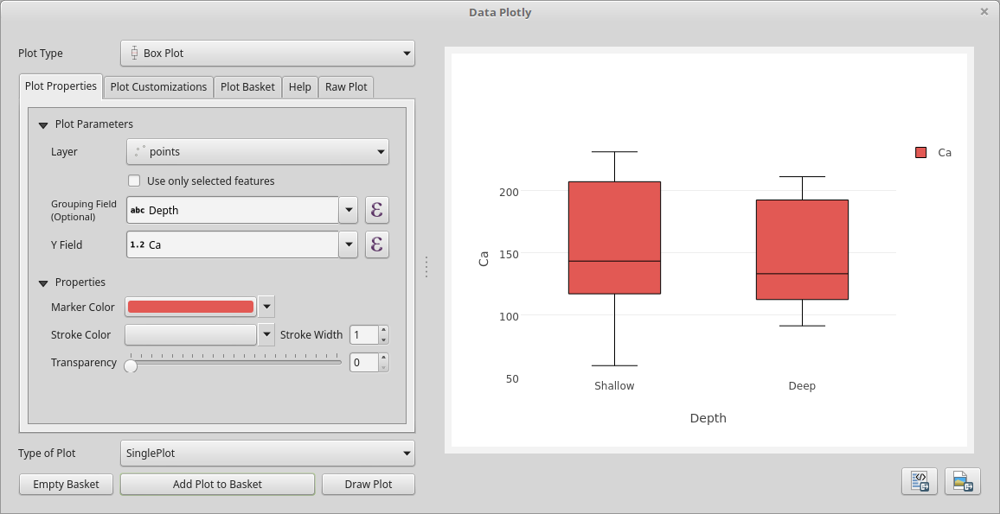

Grafico a scatola e baffi¶
Qui trovi la guida di tutti i parametri del grafico a scatola e baffi. Se hai bisogno di informazioni più generali consulta Utilizzo basico di DataPlotly.
{kind=link}
Proprietà del grafico¶
Layer: il menu a tendina mostra tutti i vettori caricati in QGIS
Gruppo (opzionale: campo di raggruppamento. Se non hai scelto nessun campo, viene mostrata un’unica scatola che aggrega i valori del campo Y
Campo Y: il campo Y
Colore scatola: colore della scatola
Colore del bordo: colore del bordo
Spessore bordo: spessore del bordo
Trasparenza: livello di trasparenza della scatola
Personalizzazioni grafico¶
Mostra legenda: mostra la legenda del grafico
Legenda orizzontale: spunta se vuoi che la legenda sia orizzontale
Titolo grafico: titolo del grafico
Titolo legenda: il titolo della legenda
Etichetta X: testo dell’asse X
Etichetta Y: testo dell’asse Y
Inverti asse X: spunta se vuoi invertire l’ordine dell’asse X
Modalità asse X: scegli fra lineare, logaritmico o categorizzato
Inverti asse Y: spunta se vuoi invertire l’ordine dell’asse Y
Modalità asse Y: scegli fra lineare, logaritmico o categorizzato
Orientamento scatola: orientamento della scatola: orizzontale o verticale
Mostra statistiche: scegli se mostrare statistiche aggiuntive, come media e deviazione standard su ogni scatola (vedi figura sotto)

Outlier: mostra anche gli outlier (o tutti i punti) vicino alla scatola. Vedi qualche esempio nelle seguenti figure: